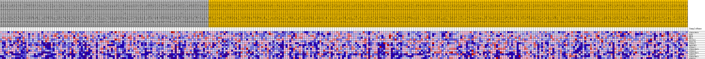
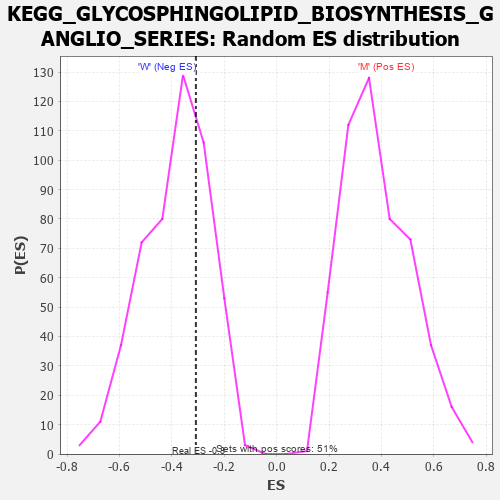

Profile of the Running ES Score & Positions of GeneSet Members on the Rank Ordered List
| Dataset | MUC16.MUC16.cls#M_versus_W.MUC16.cls#M_versus_W_repos |
| Phenotype | MUC16.cls#M_versus_W_repos |
| Upregulated in class | W |
| GeneSet | KEGG_GLYCOSPHINGOLIPID_BIOSYNTHESIS_GANGLIO_SERIES |
| Enrichment Score (ES) | -0.3081487 |
| Normalized Enrichment Score (NES) | -0.7989725 |
| Nominal p-value | 0.694332 |
| FDR q-value | 1.0 |
| FWER p-Value | 0.999 |
| PROBE | DESCRIPTION (from dataset) | GENE SYMBOL | GENE_TITLE | RANK IN GENE LIST | RANK METRIC SCORE | RUNNING ES | CORE ENRICHMENT | |
|---|---|---|---|---|---|---|---|---|
| 1 | ST6GALNAC4 | na | 1604 | 0.128 | 0.0496 | No | ||
| 2 | GLB1 | na | 1971 | 0.117 | 0.1147 | No | ||
| 3 | HEXB | na | 2503 | 0.105 | 0.1696 | No | ||
| 4 | HEXA | na | 8939 | 0.033 | 0.0736 | No | ||
| 5 | SLC33A1 | na | 22665 | -0.037 | -0.1522 | No | ||
| 6 | B3GALT4 | na | 29637 | -0.063 | -0.2400 | No | ||
| 7 | ST3GAL1 | na | 33405 | -0.075 | -0.2623 | Yes | ||
| 8 | B4GALNT1 | na | 34679 | -0.079 | -0.2371 | Yes | ||
| 9 | ST3GAL2 | na | 35246 | -0.080 | -0.1982 | Yes | ||
| 10 | ST6GALNAC6 | na | 40724 | -0.098 | -0.2373 | Yes | ||
| 11 | ST3GAL5 | na | 43952 | -0.109 | -0.2287 | Yes | ||
| 12 | ST6GALNAC5 | na | 48096 | -0.128 | -0.2254 | Yes | ||
| 13 | ST8SIA5 | na | 50390 | -0.142 | -0.1797 | Yes | ||
| 14 | ST6GALNAC3 | na | 54711 | -0.219 | -0.1241 | Yes | ||
| 15 | ST8SIA1 | na | 54720 | -0.219 | 0.0099 | Yes |

